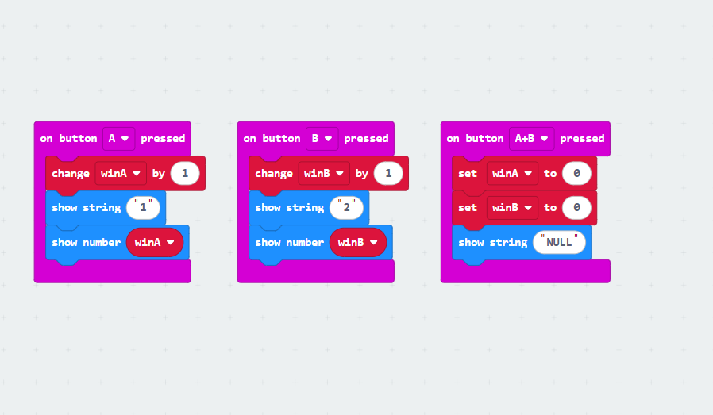
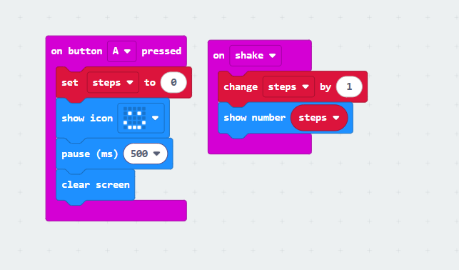

Deze les hielden we een steen-papier-schaar toernooi en haalden we de finale.
Daarna hebben we een robot gemaakt waarmee je aantekeningen kunt maken met papier en een schaar.
En de code die ervoor zorgt dat het werkt.
Elke keer dat je een stap zet, zie je op het scherm hoeveel stappen je hebt gezet.
Om te resetten, druk je een keer op de knop A.
Ik krijg deze score omdat met deze robot kun je heel gemakkelijk spelnotities maken .